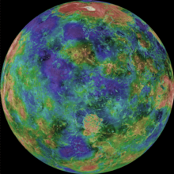

Moons

Venus's Fake Moon 1
This moon is amazing it looks looks like it's habitable by humans.
- Diameter (km)
- 22.2 km
- Mass (kg)
- 0.318 910 23 d
- Orbital period
- 1.0659×1016 kg

Venus's Fake Moon 2
Look at all the pretty colours of this moon-mustn't be real-colour
- Diameter (km)
- 12 km
- Mass (kg)
- 1.4762×1015 kg
- Orbital period
- 1.263 d
Discovery

Venus is always brighter than any star (apart from the Sun). The greatest luminosity, apparent magnitude −4.9,[9] occurs during crescent phase when it is near Earth. Venus fades to about magnitude −3 when it is backlit by the Sun.
The planet is bright enough to be seen in a mid-day clear sky,[90] and it can be easy to see when the Sun is low on the horizon. As an inferior planet, it always lies within about 47° of the Sun.